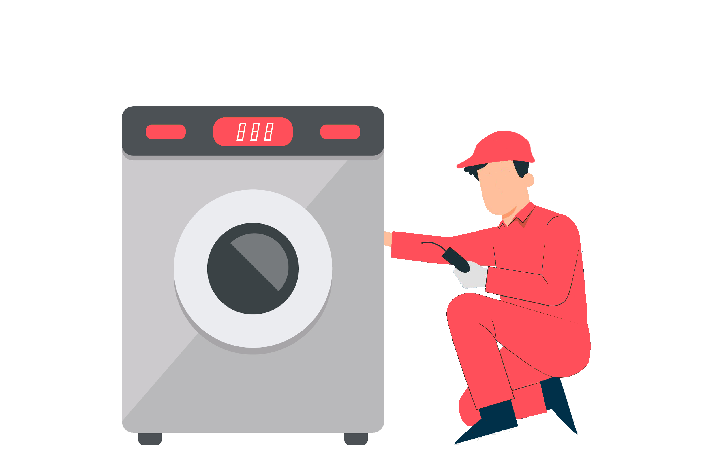

<mat-sidenav-container class="sidenav-container">
    <mat-sidenav #drawer class="sidenav" fixedInViewport [attr.role]="(isHandset$ | async) ? 'dialog' : 'navigation'" [mode]="(isHandset$ | async) ? 'over' : 'side'" [opened]="(isHandset$ | async) === false">
        <button type="button" aria-label="Toggle sidenav" mat-icon-button (click)="drawer.toggle()" *ngIf="isHandset$ | async">
  <mat-icon aria-label="Side nav toggle icon">menu</mat-icon>
</button>
        <br>
        <mat-nav-list class="nav-list">
            
            

            <h1 class="sidetitle">Admin</h1>

            <div class="dashboardside">
                <mat-list-item (click)="closeSideNav()">
                    <mat-icon class="nav-icon" aria-hidden="false" aria-label>dashboard</mat-icon>
                    <a class="dashboard-btn" routerLink="/admin">Dashboard</a>
                </mat-list-item>
            </div>
            <div class="bookingside">
                <mat-list-item (click)="closeSideNav()">
                    <mat-icon class="nav-icon" aria-hidden="false" aria-label="">worker</mat-icon>
                    <a class="booking-btn" routerLink="/technicians">Technicians</a>
                </mat-list-item>
            </div>

            <div class="feedbackside">
                <mat-list-item (click)="closeSideNav()">
                    <mat-icon class="nav-icon" aria-hidden="false" aria-label="">feedback</mat-icon>
                    <a class="feedback-btn" routerLink="/technicians">Feedbacks</a>
                </mat-list-item>
            </div>

            <div class="profileside">
                <mat-list-item (click)="closeSideNav()">
                    <mat-icon class="nav-icon" aria-hidden="false" aria-label="">account_circle</mat-icon>
                    <a class="profile-btn" routerLink="/user">Users</a>
                </mat-list-item>
            </div>
            <div class="logoutside">
                <mat-list-item (click)="closeSideNav()">
                    <mat-icon class="nav-icon">exit_to_app</mat-icon>
                    <a class="logout-btn" (click)="logout()">Logout</a>
                </mat-list-item>
            </div>
        </mat-nav-list>
    </mat-sidenav>

    <mat-sidenav-content>
        <mat-toolbar>
            <button type="button" aria-label="Toggle sidenav" mat-icon-button (click)="drawer.toggle()" *ngIf="isHandset$ | async">
              <mat-icon aria-label="Side nav toggle icon">menu</mat-icon>
          </button>
            <h1 class="titletxt">Technicians</h1>
        </mat-toolbar>
        <div class="content">

            <!--  -->


            <button mat-icon-button class="addtech" (click)="AddtechOpenDialog()" aria-label="Example icon button with a home icon">
                    <mat-icon class="addicon">add</mat-icon>
                </button>

            <div class="content1">

                <!-- <mat-form-field class="searchfield" appearance="outline">
          <mat-label>
            <mat-icon>find_in_page</mat-icon> Search..
          </mat-label>
          <input matInput>
        </mat-form-field> -->

                <mat-card class="technician1">
                    <div *ngFor="let tech of technicians">
                        <h1 class="name1">{{tech.fullname}}</h1>
                        <h2 class="position1">{{tech.specialization}}</h2>
                        <button mat-stroked-button class="statusBtn1" [matMenuTriggerFor]="statusmenu">Status</button>
                        <mat-menu #statusmenu="matMenu">
                            <button mat-menu-item (click)="active(tech._id)">Active</button>
                            <button mat-menu-item (click)="inactive(tech._id)">Inactive</button>
                        </mat-menu>
                        <button mat-flat-button class="profileBtn1" [routerLink]="['/technician/' + tech._id]">Profile</button>
                        <button mat-icon-button class="editBtn1" [matMenuTriggerFor]="editmenu">
                            <mat-icon>more_vert</mat-icon>
                        </button>

                        <mat-menu #editmenu="matMenu">
                            <button mat-menu-item [routerLink]="['/edit-technician/' + tech._id]">
                                <mat-icon>edit</mat-icon>
                                    <span>Edit</span>
                            </button>
                            <button mat-menu-item (click)="deleteOne(tech._id)">
                                <mat-icon>delete</mat-icon>
                                <span>Delete</span>
                            </button>
                        </mat-menu>
                        <hr>
                    </div>
                </mat-card>

                <mat-card class="activetech">
                    <h1 class="activetitle"> Active Technicians </h1>
                    <div *ngFor="let actTech of activeTechnicians">
                        <h1 class="name1">{{actTech.fullname}}</h1>
                        <h2 class="position1">{{actTech.specialization}}</h2>
                    </div>
                </mat-card>
            </div>
        </div>
    </mat-sidenav-content>
</mat-sidenav-container>